Префектура Киото · Фусими · святилища и вода
Фусими Инари-тайся и Фусими: тысячи тории, гора богов и благоуханная вода
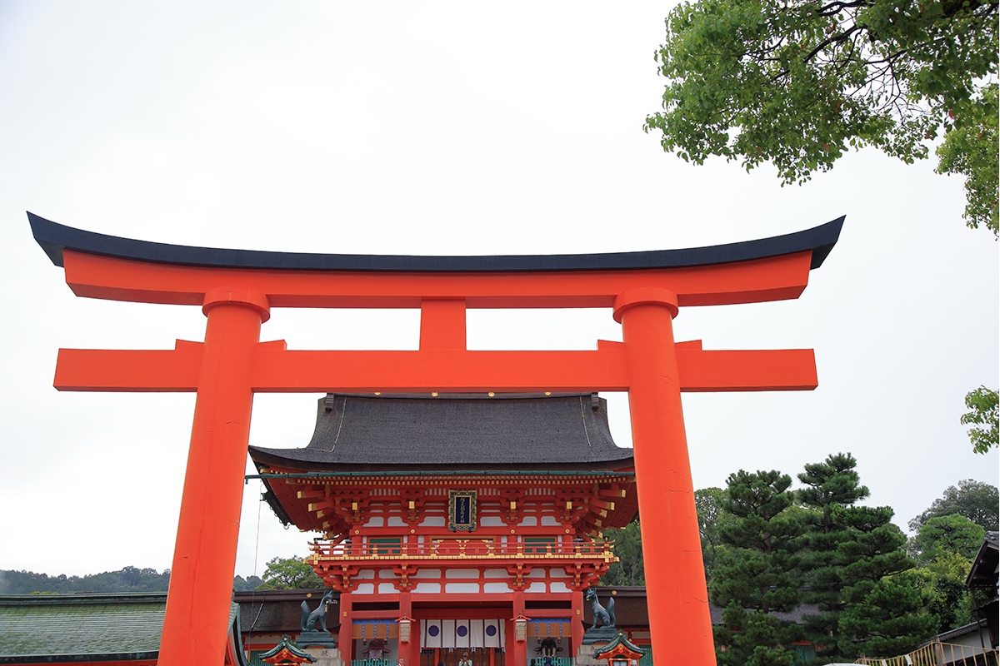
Фусими, южный район Киото, знают по бесконечным коридорам красных тории святилища Фусими Инари-тайся. Но за ними начинается гора, где на каждом повороте живёт своё божество, а внизу, в старом городе, почти каждая история связана с водой.
Святилище
Гора, на которой живут боги
Святилище Фусими Инари-тайся считается главным среди примерно 30 000 святилищ Инари в Японии. Когда-то сюда приходили просить о хорошем урожае риса, но со временем круг тех, кому помогает божество, сильно расширился: сегодня здесь молятся о процветании дела и о деньгах. Красные тории, стоящие плотными рядами, и таинственная атмосфера горы притягивают множество иностранцев.
За святилищем поднимается гора Инари, и паломничество вокруг всей горы называют «о-яма мэгури», обходом горы. Сначала проходят через ворота Ромон, которые охраняются как важная культурная ценность, кланяются в главном зале и по каменным ступеням поднимаются к Сэмбон-тории, «тысяче тории».
Коридор из тории выводит к Окуся-хохайсё, внутреннему месту поклонения. Дальше тропа проходит под тории у сосны с поднятыми корнями и выходит к развилке Мицуцудзи, откуда можно вернуться к главному залу. От Мицуцудзи к перекрёстку Ёцуцудзи ведёт длинная каменная лестница.
Выше Ёцуцудзи лежат «ситисинсэки», семь святых мест, где когда-то стояли древние святилища. Считается, что они дают особенно сильную помощь, и паломников, которые обходят их, с каждым годом становится больше. Если идти от Ёцуцудзи по часовой стрелке, как положено при обходе горы, одно за другим откроются место поклонения Годзэндани, скала Каминари-иси, «громовой камень», и святилище Мицуруги-ся.
Камень, который отвечает на желание
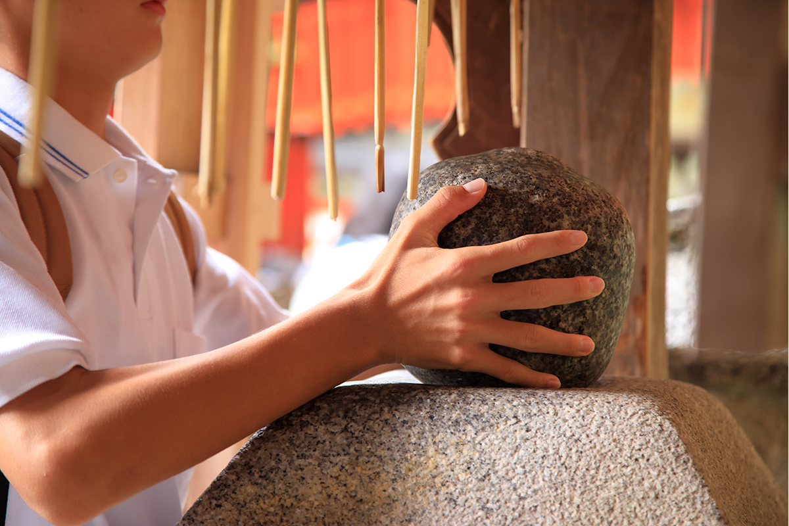
У Окуся-хохайсё, сразу за коридором тории, стоит «омокару-иси», камень «тяжело или легко». Перед каменным фонарём загадывают желание и поднимают круглый камень на его верхушке. Если он оказался легче, чем вы ожидали, желание сбудется, если тяжелее, исполнить его будет трудно.
Сосна с поднятыми корнями
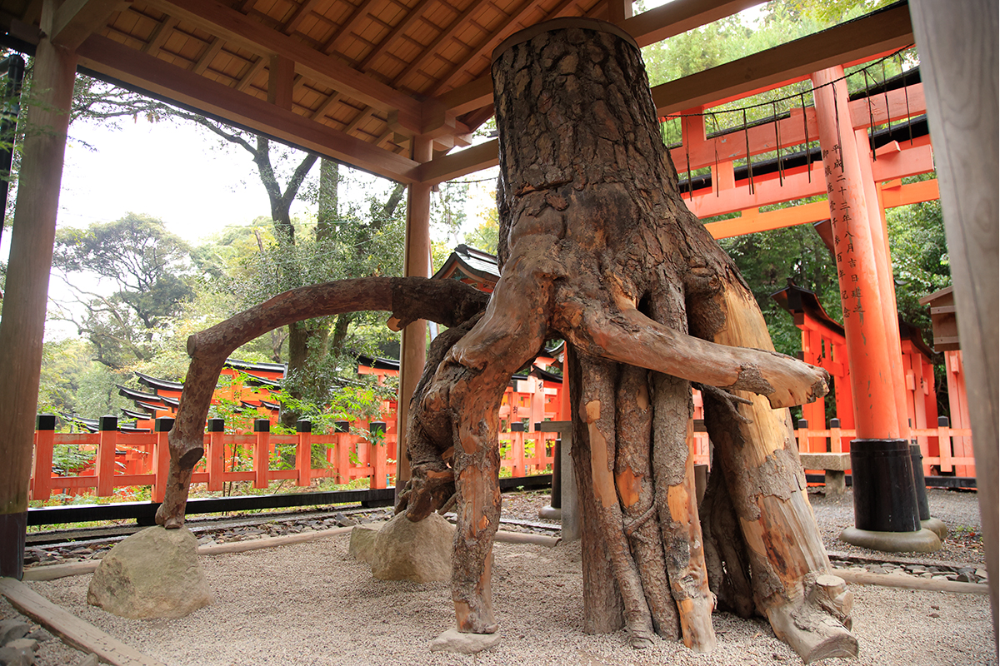
Нэагари-но мацу тоже считают местом силы, и помогает она сразу в двух делах. Если погладить кору сосны, а потом больное место на своём теле, боль пройдёт. А тому, кто пролезет под корнями, обещают рост акций: по-японски «кабу» значит и пень, и акция, а «нэагари» значит и «поднявшиеся корни», и «рост цены».
Пруд, который подсказывает дорогу
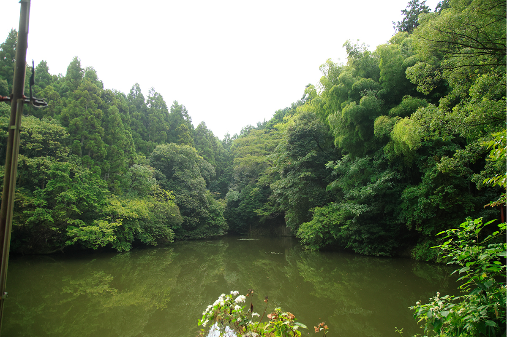
На середине склона, за святилищем Куматака-ся, лежит пруд Синъикэ, который ещё зовут Кодама-га-икэ, «пруд эха». По преданию, если ищешь пропавшего человека, нужно встать лицом к пруду и хлопнуть в ладоши: с той стороны, откуда вернётся эхо, найдётся и подсказка.
Святилище зоркого взгляда
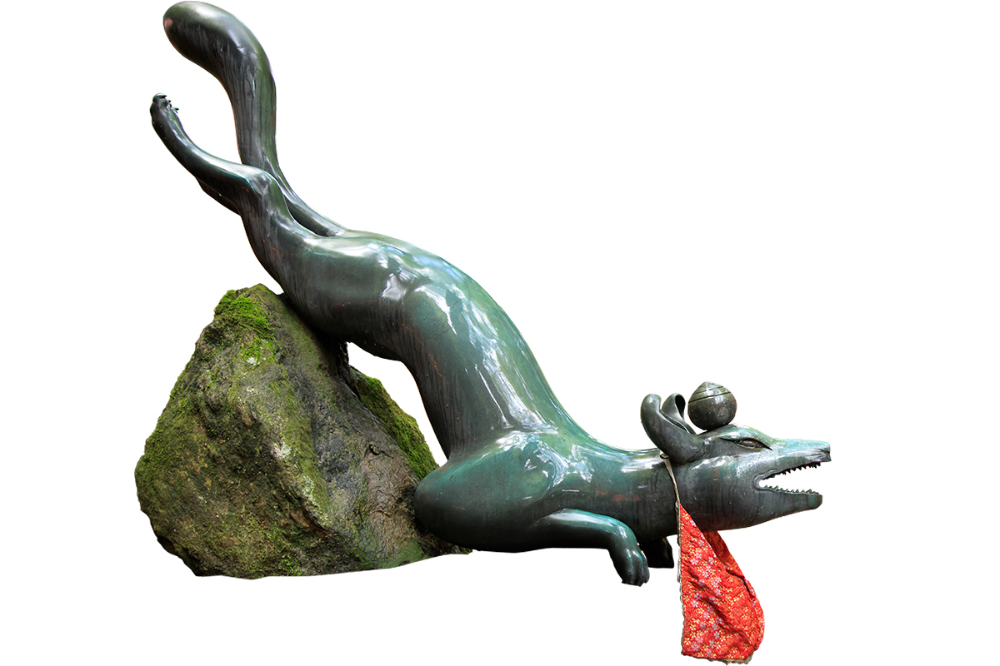
В святилище Ганрики-ся почитают божество «ганрики», зоркого взгляда. Оно лечит болезни глаз и даёт умение видеть наперёд, поэтому сюда приходят торговцы и те, кто играет на бирже. Узнать святилище легко по необычному фонтанчику для омовения рук: вода льётся из пасти бронзовой лисы, стоящей на голове.
Камень, к которому привязали гром
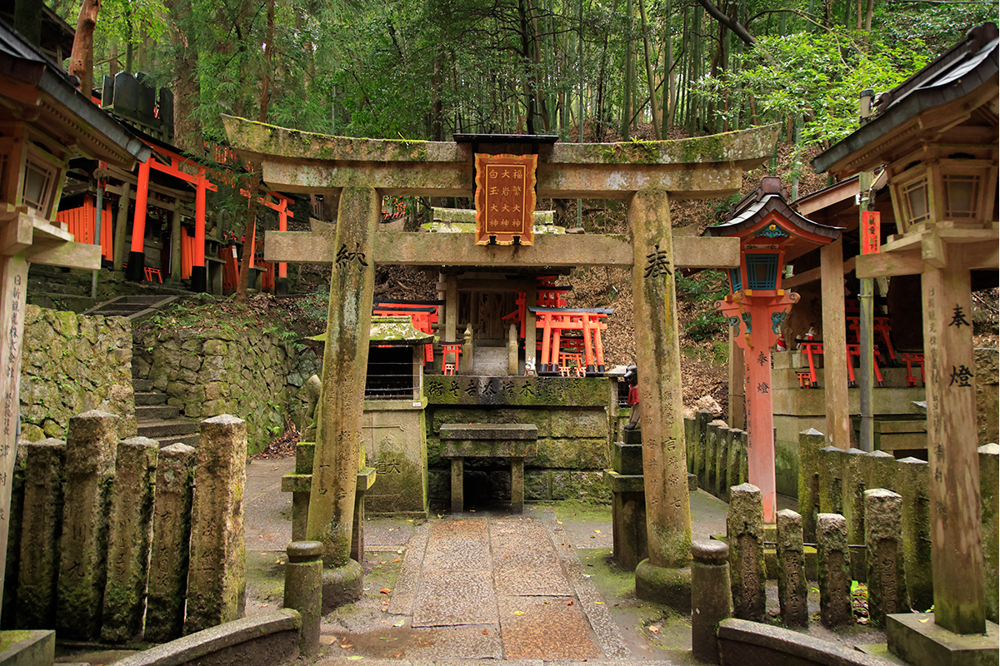
Святилище Мицуруги-ся входит в число семи святых мест горы, его ещё называют Тёдзя-ся. Здесь почитают богиню Камо-но-Тамаёри-химэ. Над святилищем лежит камень Мицуруги-иси, «камень меча»: говорят, божественная сила когда-то привязала к нему гром.
Вершина Ити-но-минэ
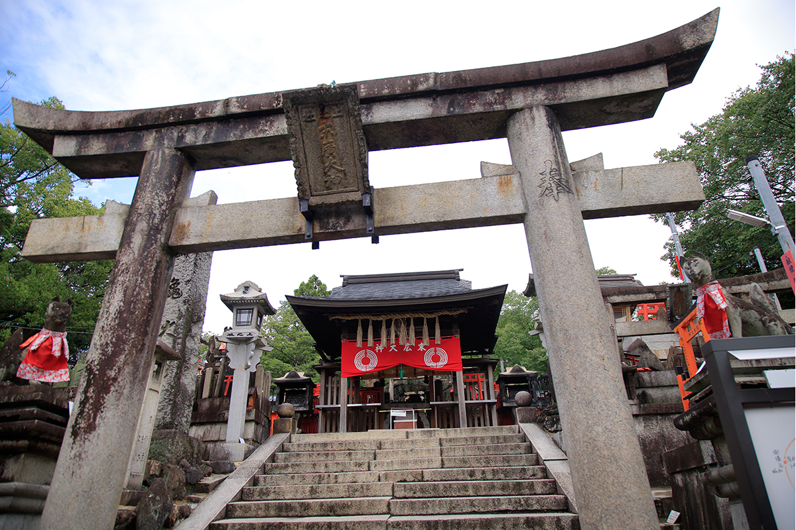
Обход заканчивается на вершине горы, Ити-но-минэ, на высоте 233 м. Здесь стоит Ками-ся синсэки, святое место, где почитают божество Суэхиро-но-оками. Вокруг главного камня тесно стоят бесчисленные малые алтари и святилища «о-цука». Считается, что здесь живут боги торговли, денежной удачи и многого другого, и это одно из самых сильных мест силы на горе.
Святилище Фусими Инари-тайся
- Адрес
- префектура Киото, Киото, район Фусими, Фукакуса-Ябуноути-тё, 68
- Телефон
- +81 75-641-7331
- Часы работы
- круглосуточно (молебны 9:00–16:30)
- Цены / Вход
- бесплатно
- Сайт
- inari.jp
Праздник
Тауэ-сай: рис для богов
Праздники и обряды проходят в Фусими Инари-тайся весь год, и одним из важнейших летних считается Тауэ-сай, праздник посадки риса. В этот день молодые побеги риса, который потом подносят божеству, высаживают на священное поле святилища. Как моление о богатом урожае его проводили уже в XIV–XVI веках, потом праздник прервался и возобновился только в XX веке.
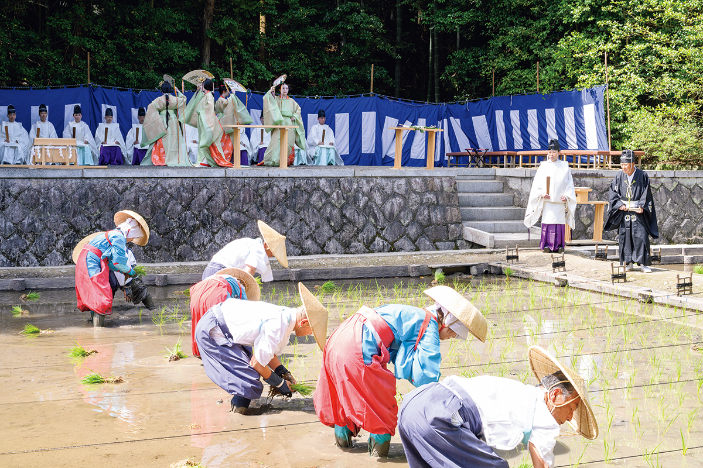
Сначала в главном зале проходит служба, а затем девушки-саотомэ и земледельцы в ярких нарядах сажают рис на священном поле. Девушки-жрицы в нарядных церемониальных одеждах исполняют танец «ота-маи», «танец рисового поля». В 2026 году Тауэ-сай прошёл 10 июня.
Праздник Тауэ-сай
- Даты
- 10 июня 2026 года
- Адрес
- префектура Киото, Киото, район Фусими, Фукакуса-Ябуноути-тё, 68 (святилище Фусими Инари-тайся)
- Телефон
- +81 75-641-7331
- Сайт
- inari.jp
Удача
Храм и святилище денежной удачи напротив друг друга
Мало кто знает, что на юге Фусими друг напротив друга стоят храм и святилище, которые приносят деньги и удачу. Ближайшие станции Тамбабаси на линии Кэйхан и Кинтэцу-Тамбабаси, оттуда несколько минут пешком на запад.
Первым будет храм Дайкоку-дзи, который в округе зовут «Фусими-но Дайкоку-сан». Его легко пройти мимо, не заметив. Главный образ храма это Дайкокутэн, бог богатства, и сюда приходят просить о деньгах и продвижении по службе. Соседи чаще называют его «Сацума-дэра», храм Сацумы: в 1615 году здесь стали почитать бога-хранителя князей Симадзу из Сацумы (нынешняя префектура Кагосима), и храм стал местом их молитв о воинской удаче. В конце эпохи Эдо здесь тайно совещались самураи из Сацумы. На территории есть могилы девяти самураев, погибших в инциденте в Тэрадае; их поставил Такамори Сайго (1828–1877), один из героев переворота Мэйдзи.
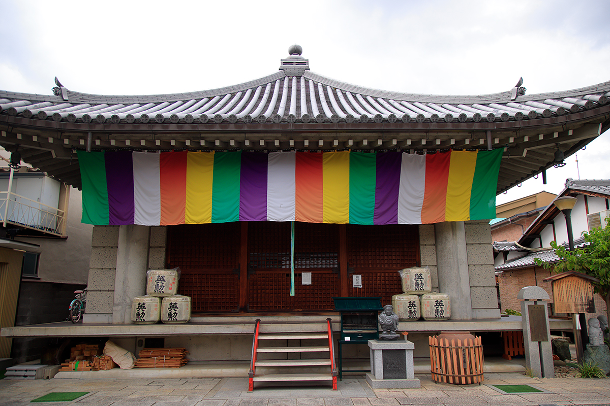
Вода, которая бьёт из земли на территории храма, зовётся «кинъун сёдзу», «чистая вода денежной удачи». Перед залом стоит «о-сасури Дайкоку», статуя Дайкокутэна, которую можно погладить на удачу.
Прямо напротив стоит святилище Кинсацу-гу, одно из старейших в Фусими. Оно стало сценой пьесы театра но «Кинсацу», которую приписывают Каннами (1333–1384), одному из создателей этого театра. Когда столицу перенесли в Киото, в селение Фусими послали императорского посланника основать святилище. Он ждал знака от богов, и с неба упала золотая табличка. На ней было написано, что бог Амэ-но-Футодама сойдёт на эту землю, чтобы охранять страну. От «золотой таблички» и пошло название святилища, и сегодня сюда приходят за удачей в торговле и деньгах.
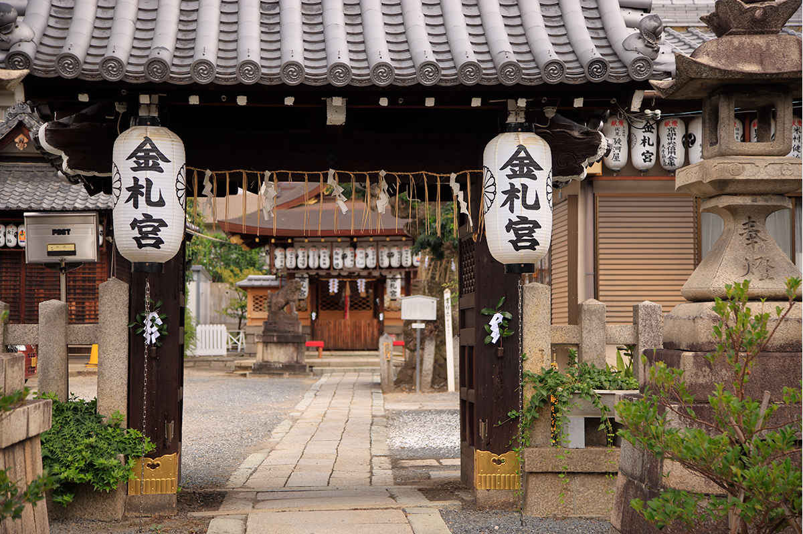
Если встать под огромным деревом остролиста «курогане-моти» на территории святилища и коснуться его коры, кажется, что чувствуешь силу, которая исполняет желания. Золотая табличка, падающая с неба, наверняка была великолепным зрелищем. Но святилище учит, что удача приходит к тому, кто думает и поступает разумно, а не просто так, и об этом стоит помнить, когда молишься здесь.
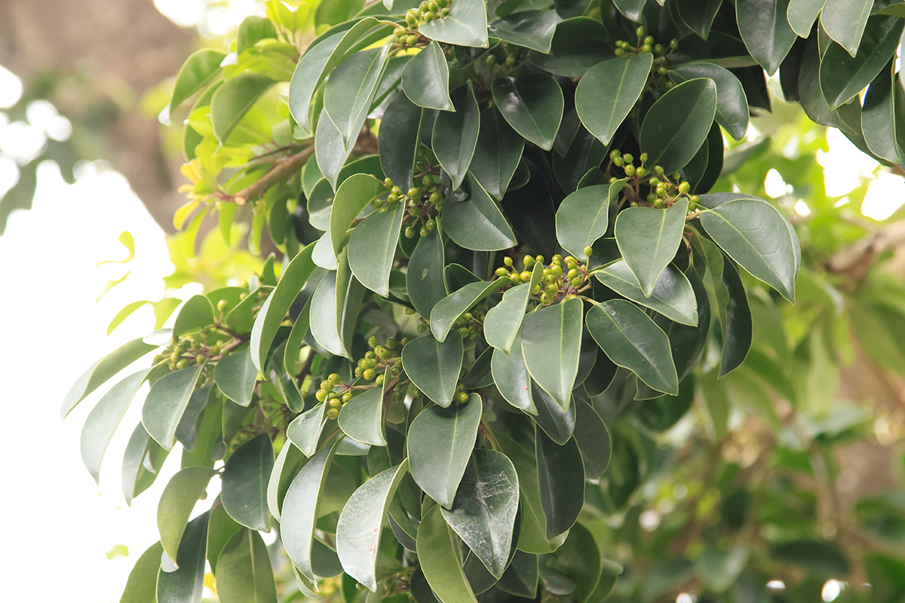
Храм Дайкоку-дзи
- Адрес
- префектура Киото, Киото, район Фусими, Таканомати-тё, 4
- Телефон
- +81 75-611-2558
- Часы работы
- территория открыта свободно
- Цены / Вход
- бесплатно
Святилище Кинсацу-гу
- Адрес
- префектура Киото, Киото, район Фусими, Таканомати-тё, 8
- Телефон
- +81 75-611-9035
- Часы работы
- 9:00–16:00
- Цены / Вход
- бесплатно
Еда
«Нэдзамэя»: инари-суши у ворот
Бог Инари, Уга-но-Митама, покровительствует урожаю. Поэтому вполне естественно, что суши из сваренного и приправленного риса, завёрнутого в жареный тофу абураагэ, любимое лакомство лис, посланниц Инари, называют «о-инари-сан». Сладковато-солёный тофу с рисом под уксусом любят все от мала до велика, и в Фусими их стоит попробовать обязательно.
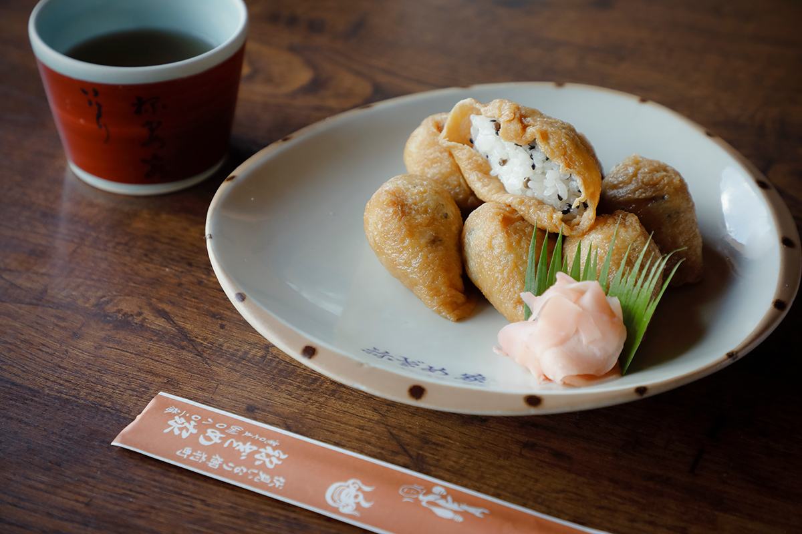
Чайный дом «Нэдзамэя» у ворот святилища открылся в 1540 году. По преданию, Хидэёси Тоётоми (1537–1598), объединитель Японии, рано утром пришёл в Фусими Инари помолиться о здоровье матери и увидел, что открыт только этот чайный дом. В благодарность он дал ему название, а его жена Нэнэ подарила первый знак своего имени. Здесь подают инари-суши, которые, кто знает, мог пробовать и сам Хидэёси, а вокруг сохранилась атмосфера старой улицы у святилища.
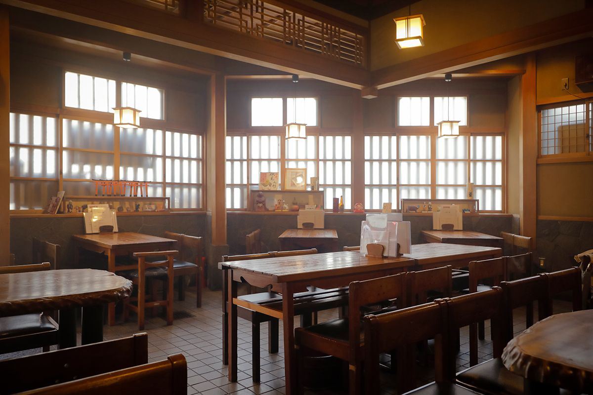
«Нэдзамэя»
- Адрес
- префектура Киото, Киото, район Фусими, Фукакуса-Инари-Онмаэ-тё, 82
- Телефон
- +81 75-641-0802
- Часы работы
- 10:00–16:00 (до конца продуктов)
- Выходные
- нерегулярно
- Сайт
- nezameya.com
Вода
Гоко-но-мия: святилище благоуханного источника
Когда-то название Фусими писали иероглифами «скрытая вода», и с давних времён район богат хорошей подземной водой. Чистой воды здесь всегда хватало, и это делало Фусими удобным местом для правителей. Хидэёси Тоётоми построил здесь замок Фусими, чтобы жить в нём на покое. После многих перемен замок восстановил Иэясу Токугава (1543–1616), основатель сёгуната Токугава, и именно здесь он получил титул сёгуна. До третьего сёгуна Иэмицу Токугава (1604–1651) церемонию назначения сёгуна проводили в замке Фусими, так что всё это время центром Японии, можно сказать, был Фусими.
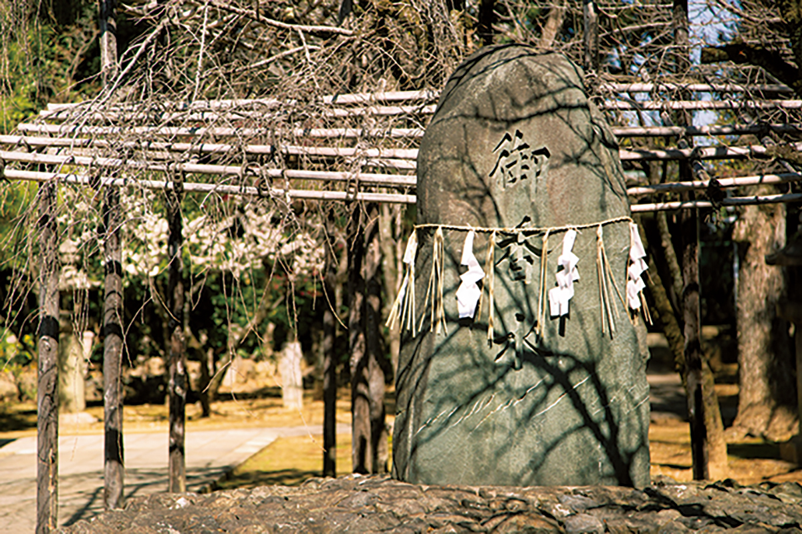
Символ воды Фусими это святилище Гоко-но-мия. Оно настолько старое, что год основания неизвестен. В 862 году на его территории забил источник с ароматной водой, которая к тому же лечила болезни, и император Сэйва (850–880) дал святилищу имя Гоко-но-мия, «святилище благоухания». Здесь почитают императрицу Дзингу, которая помогает в родах и воспитании детей.
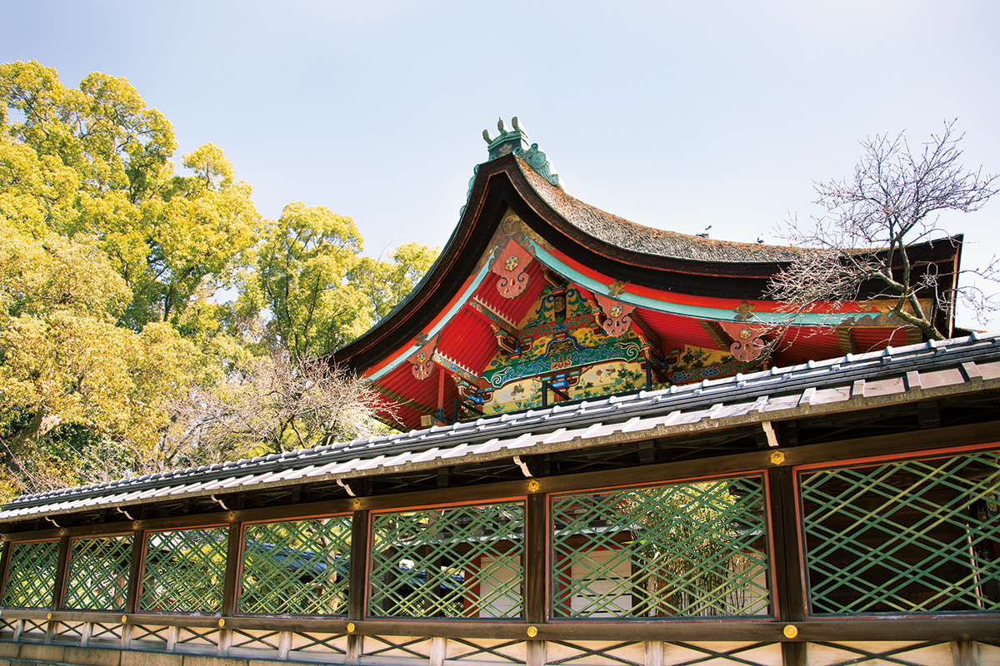
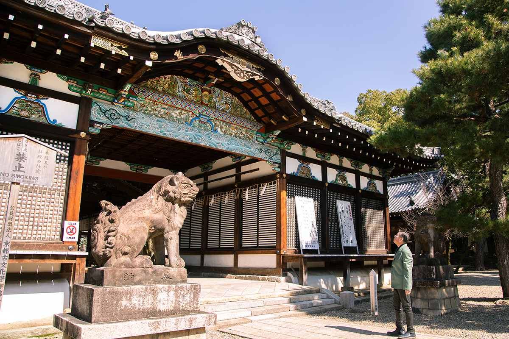
На территории стоит и святилище Тосёгу, где почитают самого Иэясу. Его сыновья Ёсинао, Ёринобу и Ёрифуса, по преданию, приняли в этой воде свою первую купель. Гоко-но-мия почитает воду почти как божество и тесно связано с родом Токугава.
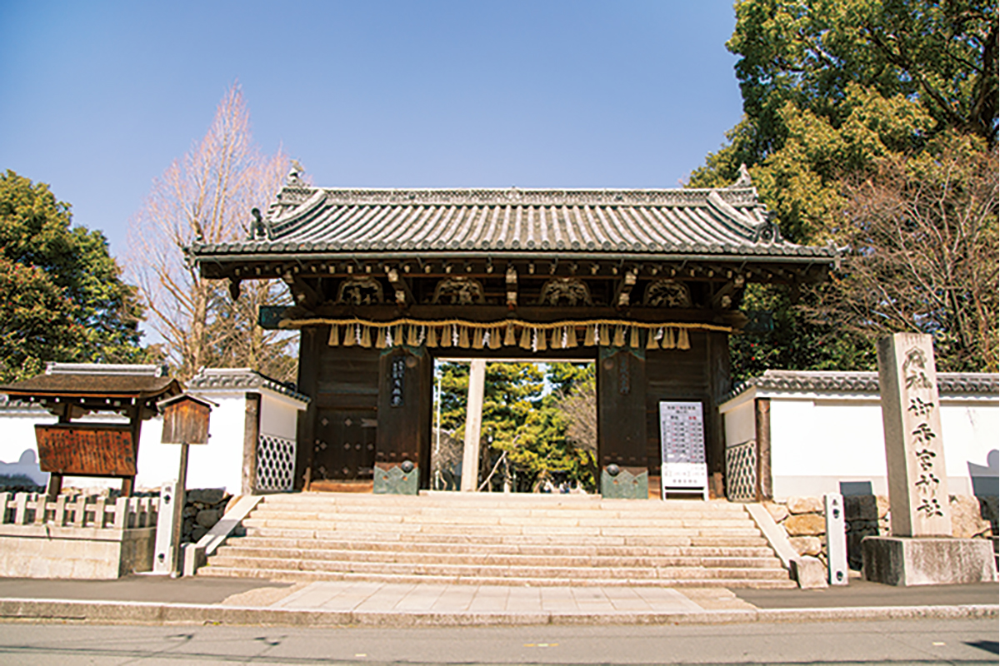
Святилище Гоко-но-мия
- Адрес
- префектура Киото, Киото, район Фусими, Гокономия-Монзэн-тё, 174
- Телефон
- +81 75-611-0559
- Часы работы
- стойка амулетов 9:00–16:00, каменный сад 9:00–15:45 (последний вход)
- Выходные
- нерегулярно
- Цены / Вход
- территория бесплатно, каменный сад 200 иен для взрослых
Кухня
Вода Фусими в сакэ и бульоне: «Сэйвасо»
Больше всех водой Фусими пользуются пивоварни сакэ. Без воды сакэ не сварить, поэтому неудивительно, что в Фусими их собралось так много. Говорят: «в Нада (район пивоварен в Кобе) мужское сакэ, в Фусими женское». Сакэ Фусими в целом мягкое на вкус, и обойти пивоварни в поисках своего любимого тоже хорошая затея.
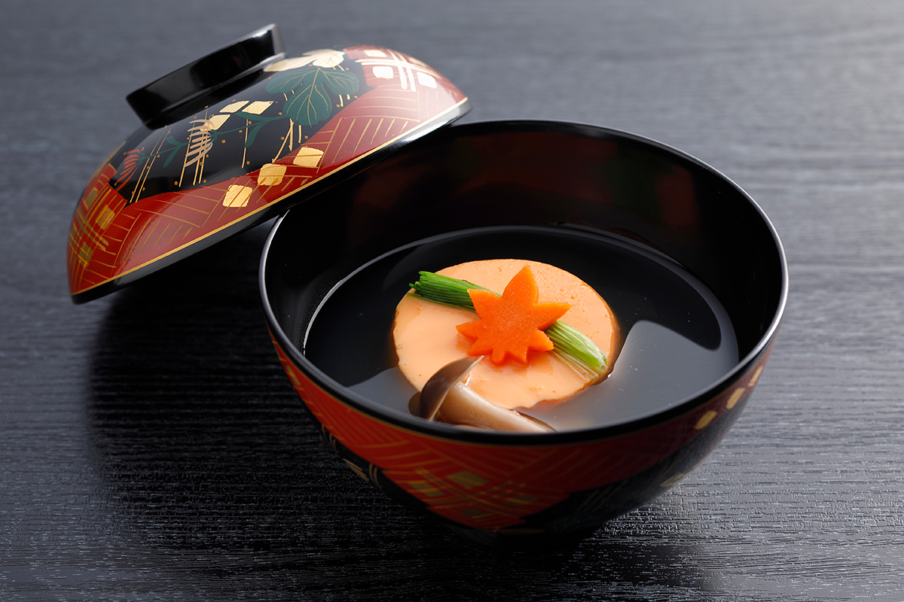
Хорошая вода нужна и кухне. Особенно бульону из комбу: для него нужна мягкая вода, и для японской кухни вода это сама жизнь. «Сэйвасо» считается одним из лучших ресторанов японской кухни в Фусими, и гости приезжают сюда даже из центра Киото. Такой большой рётэй, спрятанный среди жилых кварталов, можно встретить только в Фусими.
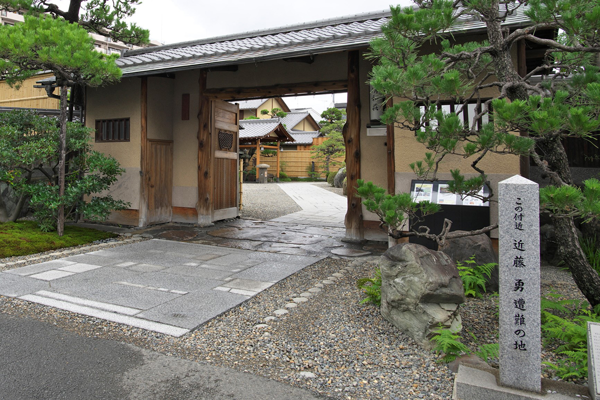
«Сэйвасо» открылся в 1957 году. Комнаты построены в стиле сукия, и из них видно ухоженный японский сад, который меняется с каждым сезоном. На территории есть колодец «Сэйва-но и», одна из знаменитых вод Фусими. На этой воде готовят кайсэки, суши с мурэной хамо и фирменные «варабимоти», сладости из крахмала папоротника.
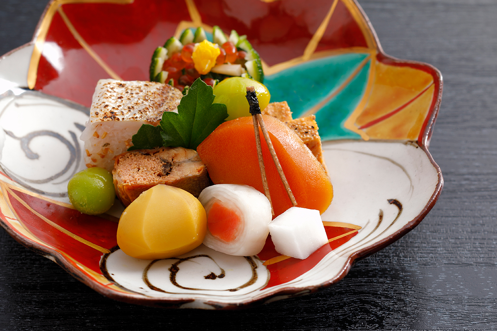
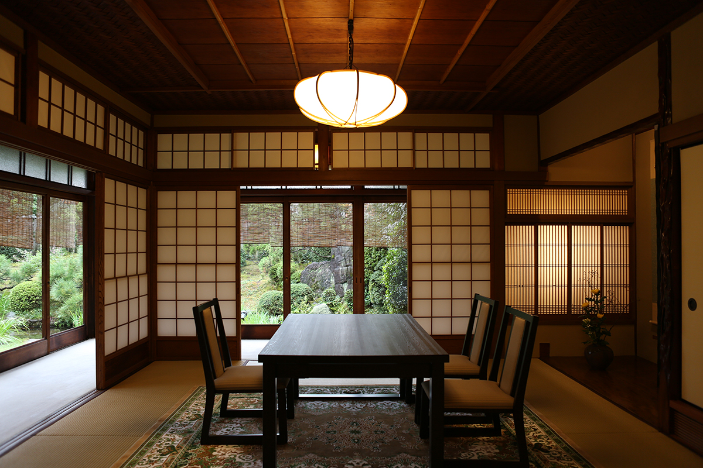
«Сэйвасо»
- Адрес
- префектура Киото, Киото, район Фусими, Фукакуса-Этигоясики-тё, 8
- Телефон
- +81 75-641-6238
- Часы работы
- 12:00–13:30 и 18:00–19:00 (время прихода)
- Выходные
- понедельник (если праздник, то на следующий день)
- Сайт
- seiwasou.com
Фото: Кацуо Такасима, Адзуса Тодороки, Тосихико Такэнака.